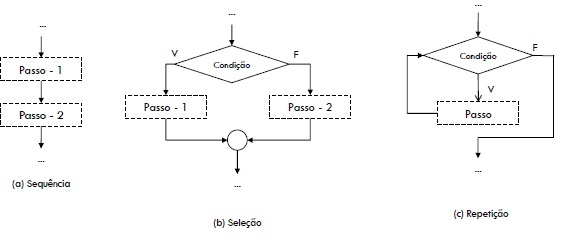

Estrutura Sequencial
Created by Fernando Marques
Paradigmas de programação
- Paradigma estruturado
- Qualquer problema pode ser quebrado em problemas menores
- Podemos chamar os problemas menores de sub-rotinas ou funções
- O processamento pode ser realizado pelo uso de três tipos de estruturas de controle
- Estrutura de controle sequencial
- Condicional
- Iterativa (repetição)
Programação Estruturada
- Sequencia: permite indicar dois ou mais passos que devem ser executados sequencialmente, na ordem em que estão especificados
- Seleção: permite indicar dois passos que devem ser executados de forma mutuamente exclusiva, dependendo de uma determinada condição
- Repetição: permite indicar um ou mais passos que devem ser executados repetidamente, dependendo de uma condilçao
Estruturas de Controle

Operadores e funções
| Operador | Exemplo | Comentário |
| = | x =y | Conteúdo da variável x é atribuído a y |
| + | x+y | Soma conteúdo de x e y |
| - | x-y | Subtrai o conteúdo de y do conteúdo de x |
| * | x*y | Multiplica o conteúdo de x pelo de y |
| / | x/y | Obtém o quociente da divisão de x por y (inteiro vs float) |
| % | x % y | Obtém o resto da divisão de x por y |
Funções da biblioteca math.h
| Exemplo | Comentário |
| abs(x) | Valor absoluto -1 é 1 |
| ceil(x) | Arredonda 3.2 é 4 |
| floor(x) | Arredonda para baixo, 3.2 é 3 |
| cos(x) | Cosseno em radianos |
| sin(x) | Seno de x em radianos |
| tan(x) | Tangente de x em radianos |
| log(x) | Logaritmo natural |
| log10(x) | Logaritmo na base 10 |
| pow(x,y) | Potência de x elevado a y |
| sqrt(x) | Raiz quadrada de x |
Exercícios
- Dada as coordenadas de dois pontos no plano cartesiano, informa a distância entre eles

Exercícios
- Dada uma distância percorrida (em quilômetros),bem como o total de combustível gasto(em
litros), informe o consumo médio do veículo em km/l.
- Dadas as medidas de uma sala em metros, bem com o preço do metro quadrado de carpete, informe o custo total para forrar o piso da sala
- Faça um programa que leia o peso e altura de uma pessoa e retorna o IMC da mesma
- Preencher a enquete Avaliação de Um Minuto